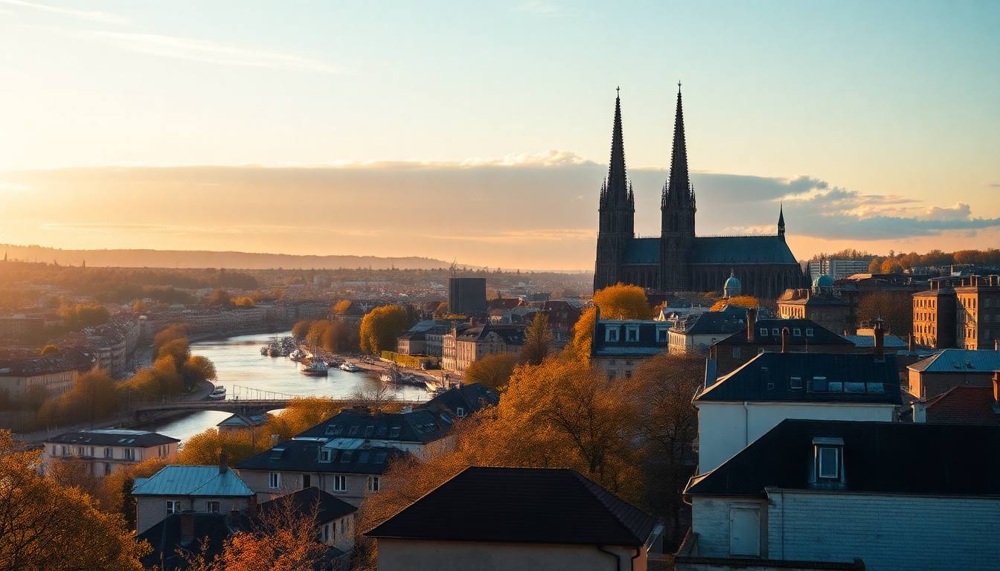

Where to Stay in Cologne: Best Neighborhoods for Every Budget

I’ve been to Cologne half a dozen times now, and every trip taught me something different about where to bed down. The first time I booked near the Hauptbahnhof because it seemed convenient—and it was, but I also woke up to sirens at 3 AM. Later I stayed in Ehrenfeld, ate the best falafel of my life, and slept like a log. This guide cuts through the noise: here’s where to stay in Cologne, broken down by budget, vibe, and what you actually want to do.
What’s the best neighborhood for first-time visitors?
If you’ve never been to Cologne and you want to see the cathedral, the river, and the old town without wasting time on trams, stay in Altstadt (the Old Town). It’s touristy—no sugarcoating that—but it’s also where the energy lives.
I stayed at Hotel am Dom once, literally across the square from the Cologne Cathedral, and the view at sunrise was worth the premium. For a quieter option two blocks back, Köln Marriott Hotel on Johannisstrasse gave us a solid night’s sleep and easy access to the Hohenzollern Bridge.
- Altstadt-Nord is where the cathedral, museums, and breweries cluster. Expect cobblestones and crowds.
- Altstadt-Süd is slightly calmer, closer to the Schokoladenmuseum and the Rhine promenade.
- Best mid-range pick: Hotel am Augustinerplatz—clean, central, and under €150 a night.
- Budget tip: Skip the chain hostels near the station; Pathpoint Cologne Hostel on Marzellenstrasse is quieter and still a 5-minute walk to the Dom.
Where should budget travelers stay without sacrificing character?
Ehrenfeld is my go-to for affordable stays that don’t feel like a compromise. It’s a former working-class district turned creative hub, full of street art, indie shops, and some of the best cheap eats in the city.
I ate at Habibi on Venloer Strasse—a tiny Lebanese joint where the shawarma plate costs €7 and comes with pickled turnips. For drinks, Lichtspiele is a dive bar with a jukebox and zero pretension.
- Ehrenfeld is about 15 minutes from the cathedral via the U-Bahn (line 3 or 4).
- Budget hotel: Moxy Cologne Ehrenfeld—modern, clean, often under €100 a night.
- Hostel option: Jugendherberge Köln-Pathpoint is a proper hostel with private rooms available.
- Be warned: Venloer Strasse can get loud on weekends. Ask for a room facing the courtyard.
What’s the best area for nightlife and young travelers?
Belgisches Viertel (Belgian Quarter) is where Cologne’s cool crowd hangs out. Think narrow streets, boutique clothing stores, and bars spilling onto the pavement from Thursday through Sunday. It’s not cheap, but it’s not Munich-priced either.
I grabbed dinner at Hanse Stube on Brüsseler Platz—traditional German food done right, with a beer garden that fills up fast. Later we hit Barracuda Bar for cocktails; the bartender made a mean Negroni and didn’t charge €18 for it.
- Belgisches Viertel is walking distance to the cathedral (20 minutes) or a short tram ride.
- Mid-range hotel: Hotel Chelsea on Jülicher Strasse—artsy, a bit worn-in, but full of personality. Rooms from €120.
- Splurge pick: Hotel im Kunterbunt—a design hotel with bold interiors and a rooftop terrace.
- Downside: Parking is a nightmare. If you drive, look for a hotel with a garage.
Where to stay for a quiet, local experience?
Sülz is the neighborhood nobody talks about, and that’s exactly why I like it. It’s residential, leafy, and full of families and students from the nearby university. You won’t find tour groups here—just bakeries, small parks, and a tram that takes you downtown in 12 minutes.
We stayed at a private apartment near Zülpicher Platz, and every morning we walked to Bäckerei Merzenich for fresh Brötchen. For dinner, Brauhaus Sülz serves Kölsch and schnitzel in a wood-paneled room that hasn’t changed since the 1970s.
- Sülz is ideal if you’re traveling with kids or want to avoid the tourist crush.
- Hotel pick: Hotel Lindenhof—a small, family-run place with a garden and free parking. Rooms from €90.
- No luxury options here—it’s all guesthouses and apartments.
- Best for: travelers who want to live in Cologne, not just visit it.
Is the area around Cologne Hauptbahnhof worth it?
The area around the main train station is convenient but chaotic. You’re steps from the cathedral, the Roman-Germanic Museum, and the KölnTriangle observation deck. But you’re also steps from kebab shops, souvenir stalls, and the occasional drunk singing at 2 AM.
I’ve stayed at Excelsior Hotel Ernst (five-star, old-world luxury, rooms from €250) and at B&B Hotel Köln-Hbf (functional, clean, under €80). Both are fine for what they offer. The middle ground is Hotel Koeln-Dom on Am Hof—basic rooms, but you can’t beat the location.
- Pros: Immediate access to trains, taxis, and the U-Bahn. Plenty of late-night food.
- Cons: Noisy, crowded, and expensive for what you get.
- Best for: early morning departures or single-night stopovers.
- Skip if: you’re on a romantic trip or need quiet.
What’s the best neighborhood for families?
Rodenkirchen is a riverside suburb about 20 minutes south of the center by tram. It’s green, safe, and has a long promenade along the Rhine where kids can run without dodging bikes. We rented a family room at Hotel Villa am Rhein—a converted villa with a garden and direct river access.
- Rodenkirchen has its own small shops, bakeries, and a weekly farmers market.
- Family hotel: Hotel Restaurant Kleiner Grün—simple, affordable, with a playground.
- Public transport: tram line 16 gets you to the cathedral in 25 minutes.
- Drawback: limited dining options after 9 PM. Stock up at Rewe supermarket on Hauptstrasse.
FAQ
What’s the cheapest neighborhood to stay in Cologne? Ehrenfeld and parts of Kalk (east of the Rhine) offer the lowest prices. Kalk is rougher around the edges but has good tram connections and a lively food scene. I’d pick Ehrenfeld over Kalk for safety and vibe, but both are under €100 a night for a decent room.
Is it better to stay on the west or east side of the Rhine? West side (Altstadt, Belgisches Viertel, Ehrenfeld) is where almost everything happens. The east side has Deutz, which is mainly exhibition grounds and the KölnTriangle tower. Unless you’re attending a trade fair at Koelnmesse, stay west. You’ll save time and taxi fare.
Should I book a hotel with breakfast in Cologne? Yes, if you value convenience. German hotel breakfasts are usually buffets with bread, cold cuts, cheese, eggs, and muesli—solid fuel for a day of walking. But if you’re on a budget, skip it. Bakeries like Bäckerei Merzenich or Der Beck sell a coffee + croissant combo for under €4.
Conclusion
- First time in Cologne? Stay in Altstadt for proximity to the cathedral and river.
- On a budget? Ehrenfeld gives you character and low prices.
- Nightlife seeker? Belgisches Viertel is where the bars and restaurants are.
- Traveling with family? Rodenkirchen offers peace and green space.
- Just passing through? The Hauptbahnhof area works for a single night, but don’t linger.